My contribution
On our four-person team, I wrote all of the vehicle software, created the CAD, built the complete winch mechanism, and developed the turbidity and rotary-encoder circuits. Mateo Hoffer, Logan Mansfield, and Nata Velarde-Alvarez contributed to fabrication, calibration, integration, and analysis across the project.
What a surface sample cannot tell you.
The Jolly Roger was built to investigate how temperature and turbidity change below the water surface. A boat with fixed sensors can move a measurement across a harbor; adding a winch lets the same platform move the measurement vertically. Our goal was a repeatable 10-inch profile at two sites in Dana Point, with each sensor reading associated with the vehicle’s position and the deployed cable length.
We chose a surface vehicle rather than a diving vehicle to keep the main electronics above the waterline and simplify recovery. That put the hard problems at the interfaces: keeping the boat stable while a payload moved, estimating deployment depth, protecting the wiring, and making calibrated sensors behave next to motors and a moving cable.
| Parameter | Documented value |
|---|---|
| Envelope | 26 × 33 × 14 in |
| Mass | 3.63 kg |
| Controller | Teensy 4.0 |
| Profile depth | 10 in |
| Winch | Approximately 6 rpm; 3 in spool |
| Logging | 10 Hz |
| Calibration agreement | Approximately ±0.1 in in physical cable-unspooling tests |
A load path that did not depend on the motor shaft.
I designed the winch around a custom-machined aluminum mandrel supported by two ball bearings. The load path ran from the motor through the coupling, mandrel, spool, cable, and payload. The bearings reduced friction and wobble and kept the suspended load from being carried directly by the motor’s output shaft.
Printed brackets aligned the motor, bearings, encoder, and cable path. A PETG spacer constrained the bearings; PETG was also used where toughness and compliance were useful, while PLA served in lower-shear-load locations. Threaded rods and standard fasteners clamped the assembly.
The rotary encoder followed the spool through a 1:1 pair of friction rollers. Electrical tape and 80-grit sandpaper gave the contact surfaces enough grip to continue working when wet. I placed the cable exit near the vehicle centerline to reduce the roll and yaw moment from the suspended payload.
{kind=link}
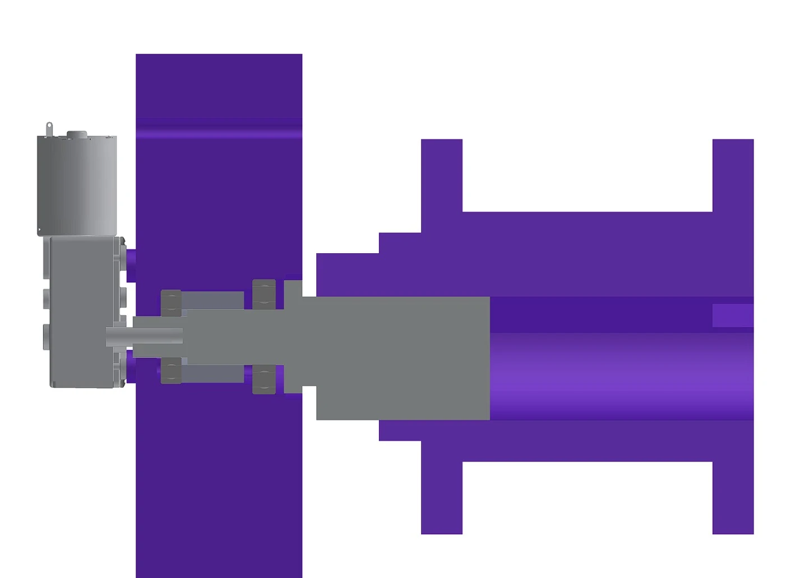
The sensor package had competing requirements: enough submerged weight to descend and remain approximately vertical, but little enough load that the winch could retrieve it. Because the available motor had no usable datasheet, we established that operating load experimentally. A 250 g ballast mass was the minimum that reliably sank the package.
The optical chamber used channels and a lower cone to admit new water while a diving-bell-shaped cover reduced ambient-light entry. The two photodiodes and infrared emitter occupied fixed locations within that chamber. The thermistor was mounted on an outside strut, exposed to circulating water and away from extra thermal mass.
{kind=link}
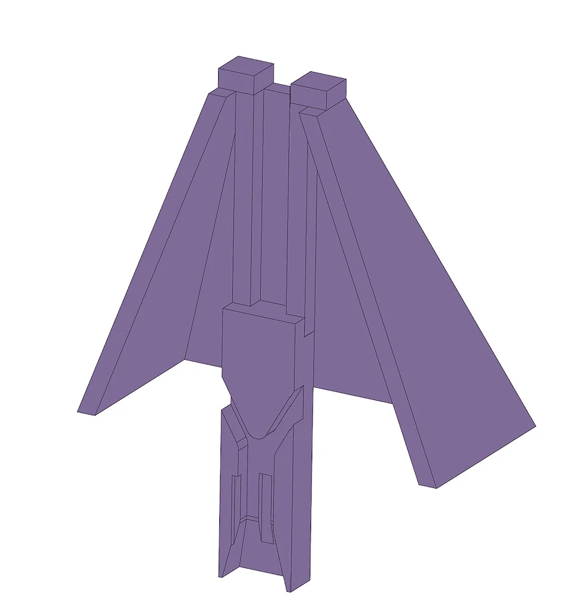
The boat was not mass-symmetric. Two 240 g trim weights opposite the propulsion motors reduced list; those weights were selected through float tests. The calculated buoyancy was 35.67 N with only 0.089 N positive net buoyancy, although float testing suggested that estimate understated the available support. Either way, buoyancy margin is a design item to increase before adding more hardware.
Three sensors, one constrained analog interface.
The Teensy’s analog measurement range was 0–3.3 V. We selected expected input ranges before building the circuits so that each sensor used a useful fraction of the ADC span without clipping. The system shared a regulated power rail and common ground, with local voltage regulation and signal conditioning where needed.
For turbidity, my circuit compared light scattered at 90 degrees with the transmitted-light channel. The voltage ratio partially compensates for changes that affect both optical channels, such as source intensity. A 555-timer circuit drove the infrared LED; photodiode transimpedance stages and subsequent gain converted the small currents into measurable voltages. The design used 47 kΩ transimpedance, a subsequent 13× gain stage, and trimming to keep the outputs in range.
The intended measurement range was approximately 0–25 NTU. Calibration against a reference turbidity meter established the relationship between the two-channel ratio and turbidity. The calibration plot includes both fitted behavior and uncertainty bounds, which matter when interpreting a small change in field data.
{kind=link}
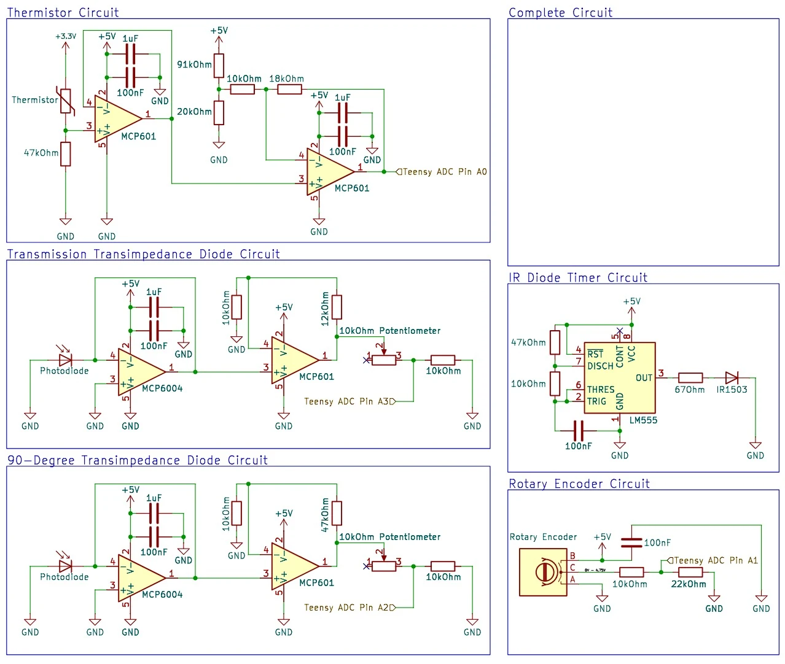
{kind=link}
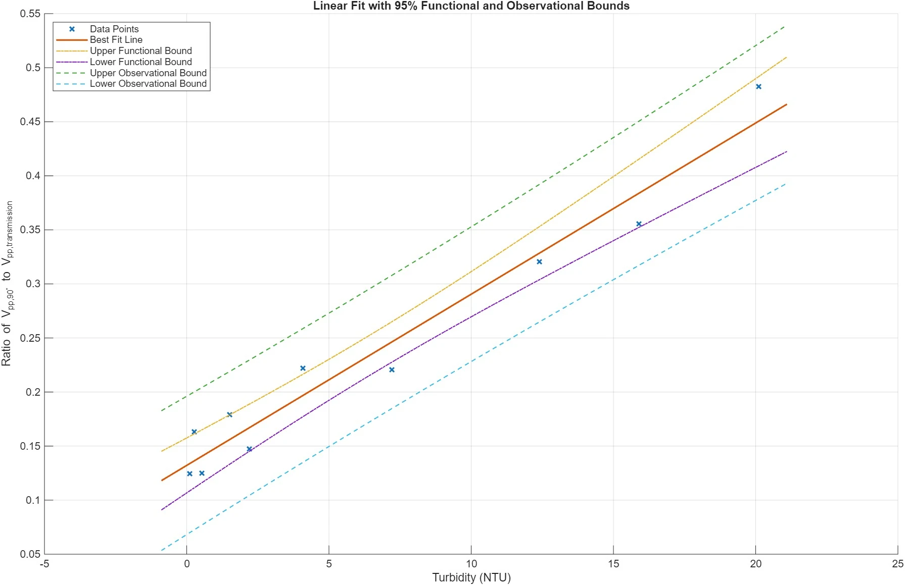
The temperature channel used a 47 kΩ Murata thermistor, offset amplification, and buffering. It was designed around an expected 14–25 °C range and approximately 0.3–3.0 V output. A second-degree empirical calibration converted measured voltage to temperature over that range. Its effective response was limited by thermal lag in the waterproofed package, rather than by the 10 Hz logging rate.
{kind=link}
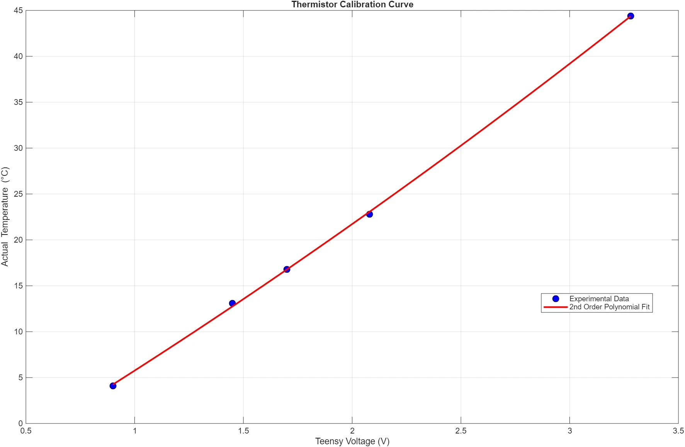
For depth, I used a Hall-effect rotary encoder and software angle unwrapping. Each transition through 360 degrees was converted into cumulative rotation; cable payout was estimated from rotation and the 3-inch spool diameter. At roughly 6 rpm and 10 Hz sampling, there were about 100 measurements per revolution.
Physical cable-unspooling tests agreed with commanded distances within approximately 0.1 inch over the operating range. That result describes cable payout, not total underwater depth error: cable angle, payload swing, boat motion, and changes in the effective spool diameter can still matter in the water.
{kind=link}
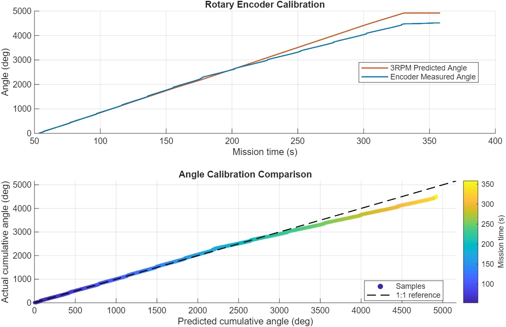
Calibrate, navigate, hold, profile, return.
Before the field deployment, I used test scripts and MATLAB analysis to exercise the sensors, angle unwrapping, cable-length calculation, logging, and winch behavior independently in the tank room. Those checks supported a conservative 10-inch field profile and established expected ranges for the measurements.
The mission code began logging when powered, allowed time to seal and mount the electronics enclosure, recorded baseline sensor readings, and waited for a minimum six-satellite GPS lock. It then used proportional GPS navigation to approach the programmed waypoint, held position while the winch deployed and recovered the payload, and returned toward the launch location. The small commanded waypoint radius was a control setting, not a claim of centimeter-level GPS accuracy.
The logger recorded time, GPS, encoder, temperature, turbidity, and IMU measurements, preserving raw ADC values and voltages alongside converted quantities. Post-processing used half-second binned medians to examine profiles in the presence of noise. Ground-truth instruments measured 19.4 °C and 13.3 NTU before deployment.
We compared Log 184 near the pier with Log 187 near the center of the cove. The site difference was scientifically useful, but the two runs also differed in how well the vehicle held position.
{kind=link}
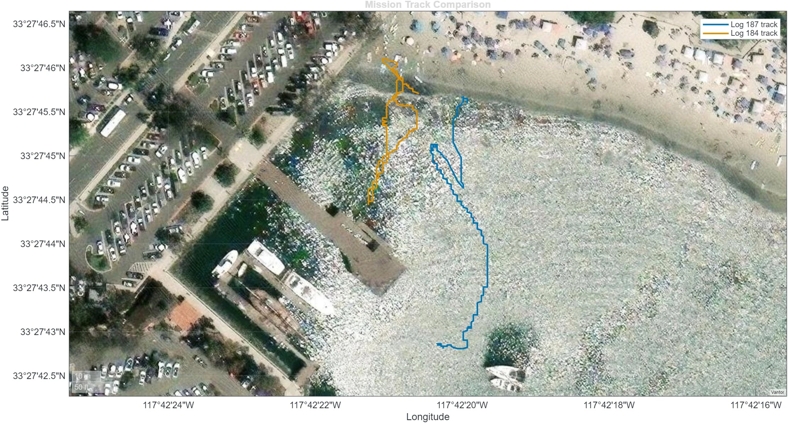
Log 187 held position within roughly a few tenths of a meter, with heading around −7 to +6 degrees. Log 184 drifted to approximately 2.5 m near the deepest bin and showed heading errors around 30–35 degrees. After that run, we found a propulsion motor wrapped in debris. Removing it resolved the apparent mechanical problem, but it did not make the two datasets equally clean.
{kind=link}
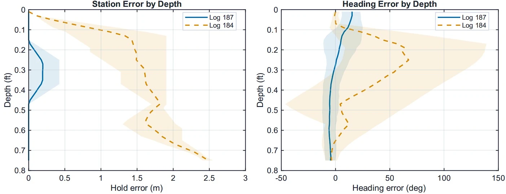
Temperature told a story. Turbidity did not tell just one.
Temperature was the strongest environmental result. Both profiles showed warmer water near the surface and cooler readings at depth. Log 187 dropped by approximately 2.5 ± 1 °C and Log 184 by approximately 4.5 ± 1.5 °C over the sampled profile. Their deeper readings approached the 19.4 °C reference measurement, supporting the plausibility of the calibration.
The important comparison was with a surface-only measurement: even this shallow profile revealed temperature variation that a fixed near-surface sensor would have missed. The difference between the runs still had to be interpreted alongside their different locations and control quality.
{kind=link}
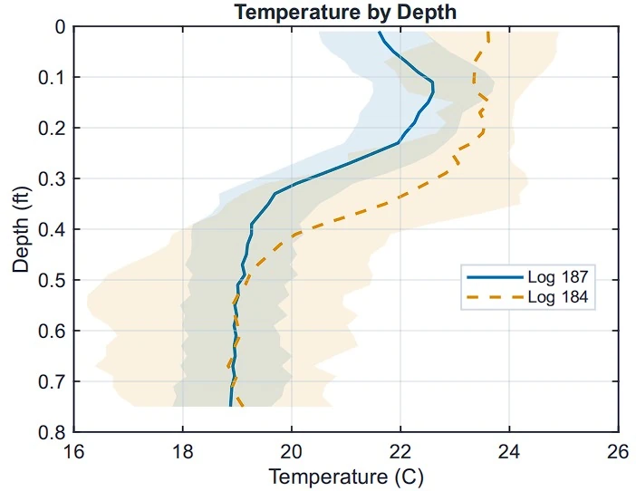
{kind=link}
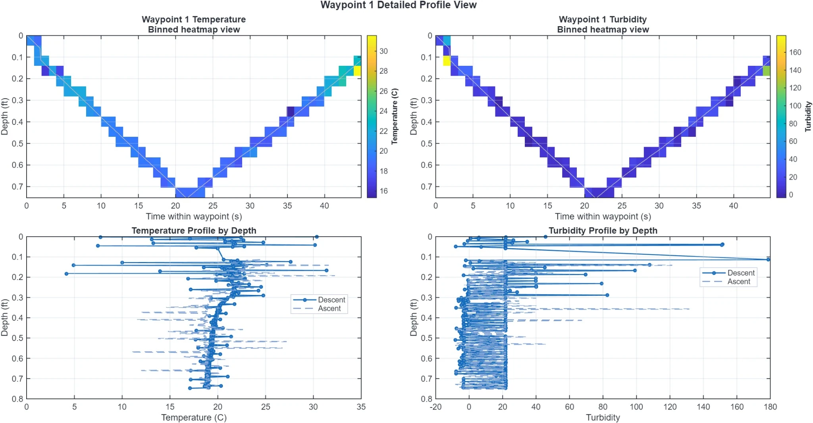
Turbidity returned a plausible baseline around 13–15 NTU, near the 13.3 NTU reference. But some samples jumped into the hundreds of NTU, with one Log 184 spike reaching roughly 600 NTU. Those excursions were far outside the expected 0–25 NTU range and undermined any small apparent trend with depth.
The binned values and individual photodiode channels could support conflicting interpretations of the water column. Instead of selecting the most attractive trend, the report concludes that the field implementation was not robust enough to resolve fine turbidity structure. Plausible contributors included electrical noise, intermittent wiring, cable strain, debris in the optical path, ambient light, and payload motion; the exact contribution of each was not isolated.
{kind=link}
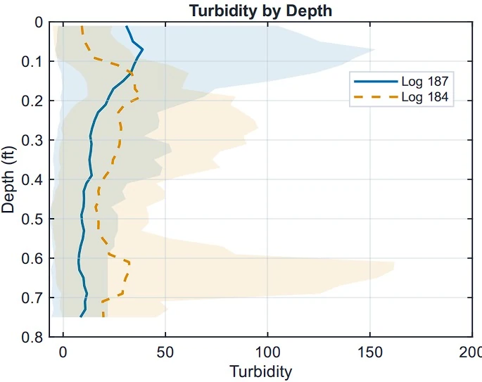
{kind=link}
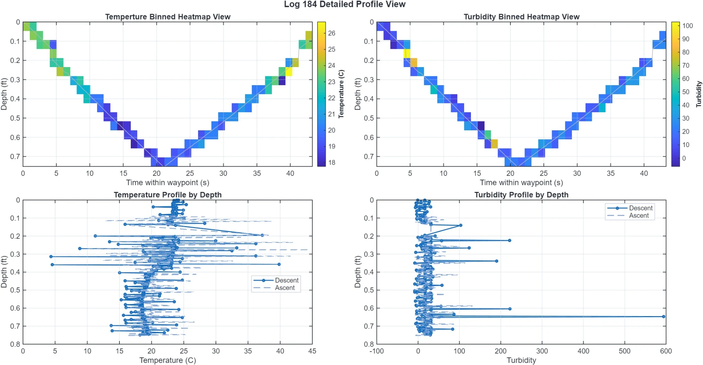
{kind=link}
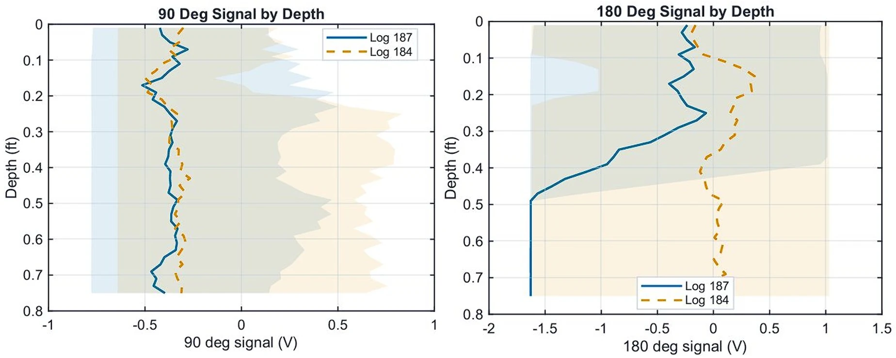
Calibration was necessary. Field robustness was the next problem.
Extending the cable beyond about 1.5 feet made all sensor signals extremely noisy or reduced them to zero. That pattern suggested a short or disconnection in the twisting harness. It also explained why simply commanding a deeper profile would not have improved the experiment.
The next revision needs to address the physical and electrical causes before seeking more measurements. These are proposed improvements from the field findings; they were not all implemented during this project.
| Observed limitation | Design response |
|---|---|
| Cable motion corrupted multiple signals | Improve cable management and strain relief at both ends; inspect the harness through repeated deployment cycles. |
| High-gain optical channels were noisy in the field | Use shielded or twisted signal wiring, separate motor and sensor paths, improve filtering, and stabilize the optical geometry. |
| Slow profiling increased exposure to drift | Select a faster winch motor after calculating the required torque for the completed payload. |
| Limited flotation and imperfect station keeping | Add buoyancy margin and improve holding performance before carrying more payload. |
| Only two shallow field profiles | Repeat at more sites and depths after the mechanical and electrical limitations are corrected. |
This project connected mechanical design, analog electronics, embedded software, calibration, controls, and data interpretation. The useful result was not that every sensor worked equally well. It was being able to trace which parts of the measurement chain were credible and which needed another design cycle.
{kind=link}
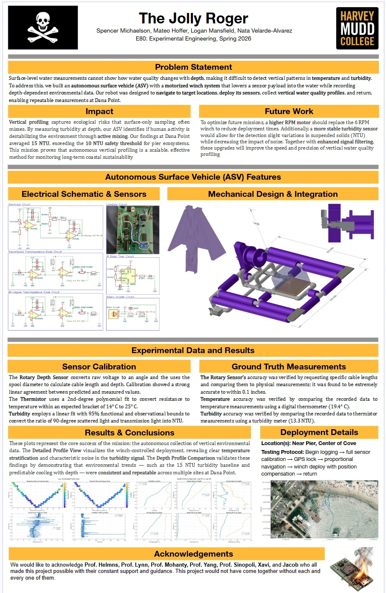
Engineering Portfolio Raw, pp. 78–88: the Jolly Roger project report and poster. Figures retain their original axes and uncertainty bounds. Reported cable-length calibration is distinguished from total in-water depth accuracy; proposed improvements are not presented as completed work.
Teensy · Proportional control · CAD · Sensor calibration · Data analysis